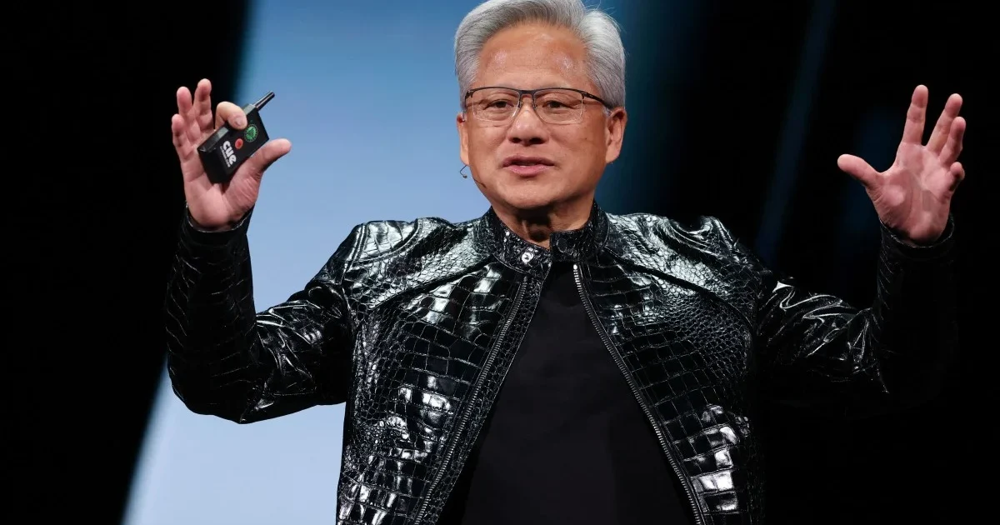

Security & Crime · 09 Nov 2026
Nvidia probes CEO over Chinese spy link allegations

Chip giant Nvidia’s board announced Sunday it had opened a probe into chief executive and co-founder Jensen Huang after he acknowledged an affair with a woman US officials say was working for Chinese intelligence, a claim Beijing denied. Read More: https://punchng.com/nvidia-probes-ceo-over-ch
Multiple independent publishers are reporting on the same development: Nvidia probes CEO over Chinese spy link allegations.
The available reports place the development in the Security & Crime category. The accounts were compared for agreement on the central event rather than simply shared names or broad topics.
One of the available reports describes the development this way: Chip giant Nvidia’s board announced Sunday it had opened a probe into chief executive and co-founder Jensen Huang after he acknowledged an affair with a woman US officials say was working for Chinese intelligence, a claim Beijing denied. Read More: https://punchng.com/nvidia-probes-ceo-over-chinese-spy-link-allegations/
Readers should consult the linked source reports for additional context, updates and details that may change as the story develops.
Sources
This article was produced by the C. O. Eric AI Newsroom from the cited sources. It is published only after automated evidence and safety checks.